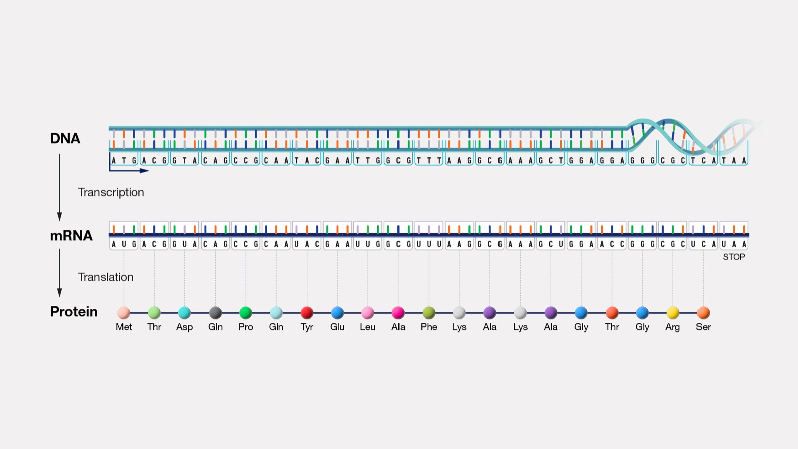
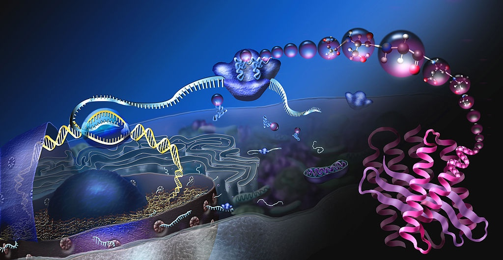
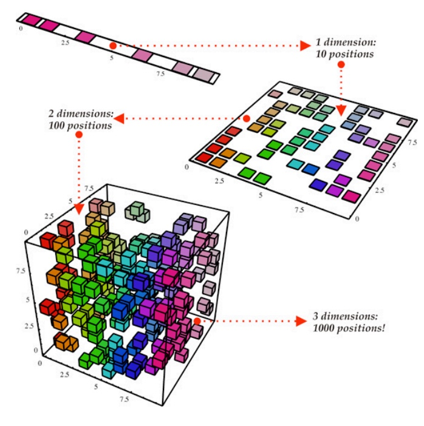
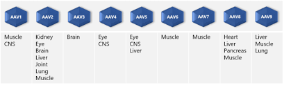

!!!VIRUSES ARE GREAT TRANSPORTS TO HUMAN CELLS!!!
A sequence of DNA/RNA housed inside a protein shell
A system defined by its information & replication dynamics


fastqc: Check quality of raw sequencing datatrimmomatic: Trim adapters and low-quality sequencesbwa mem: Align reads to reference genomesamtools view -bS: Convert SAM to BAM formatbedtools coverage: Calculate read coverage over regionsbcftools call: Call variants from BAM filesgrep, awk, cut: Extract and manipulate data from filesGENOME SEQUENCE => FITNESS
Protein shell protecting the genome
!!!60 Points of Symmetry!!! Icosahedral shape, with internal 5 and 3 symmetry points
Repeated sequences at both ends of the AAV genome, with secondary structure symmetry
but 2-mers ‘CG’ are inflammatory
“Biochemistry disrupts Machine Learning” — Jennifer Listgarten

Discriminative Learning (DL)
Generative Learning (GL)
!!!GL can work better when search space infeasible!!!
Steps:
Objective: Optimize capsids for gene delivery and therapeutic effect

FDA Guidance: less interest in novel capsids
Tools
FDA more inclined to permit DNA sequences of promoters, not proteins being injected into organs.